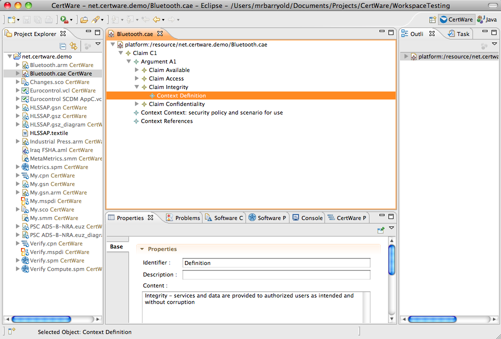
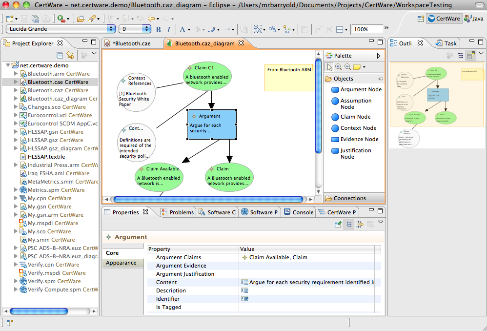

References
- Documents
- Adelard's ASCE CAE
Claim-Argument-Evidence Notation Arguments
The claim-argument-evidence was created by Adelard as a simple way to present safety case arguments. From Adelard's site (see references):
- Claim: a claim is a statement asserted within the argument that can be assessed to be true or false. Each claim is be supported by a number of sub claims, arguments or evidence. The claim may contain additional contextual material, for example explaining terms used and scope.
- Argument: an argument is a description of the argument approach presented in support of a claim. This element is optional, but often it is good practice to include to explain the approach to satisfying the parent claim. If the approach to supporting a claim is straightforward or well understood by the intended audience, it is permissible to simply link directly from the supporting claim.
- Evidence: an evidence statement is a reference to the evidence being presented in support of the claim or argument. Usually the evidence node will summarise and link out to the relevant report containing the evidence.
CertWare implements CAE model editors by building upon the OMG's Argumentation Metamodel (ARM) and according to the example implementation of CAE according to the ARM standard (as of 2010). CertWare provides both text-based structured tree editors and graphical editors in the workbench. Model conversions into other types, to the extent permitted by metamodel semantics, will be provided soon.
The text-based editor is shown in the figure.
The graphical editor is shown in the next figure.
